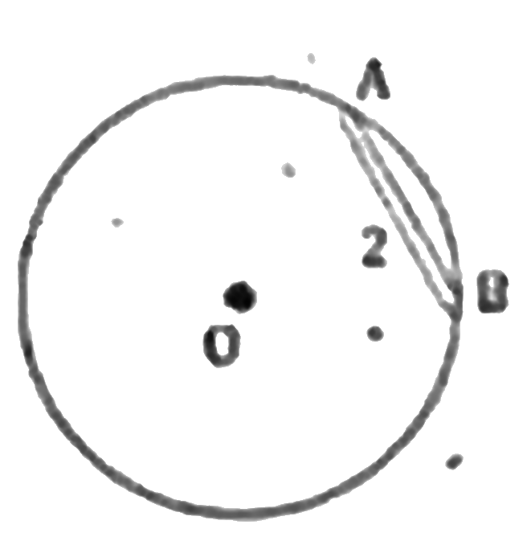
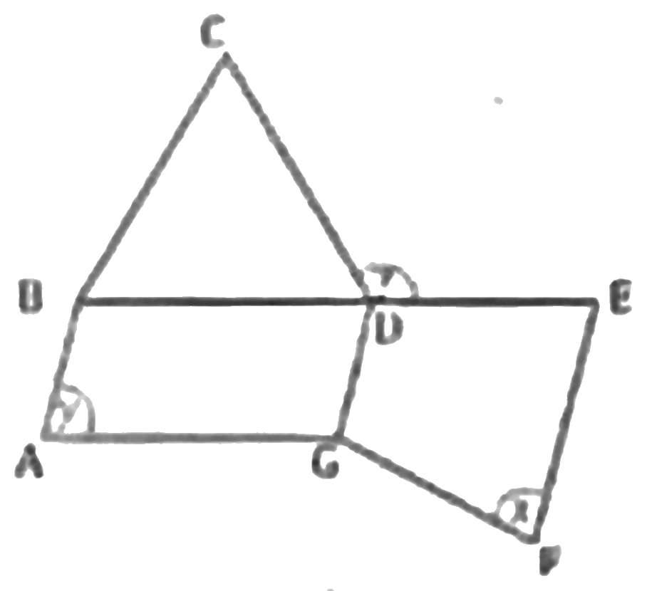

נתון: x < y + z
איזו מהטענות הבאות בהכרח אינה נכונה?
חטיף סניקרס מכיל 0.004 גרם סוכר. לאדם המתאמן לתחרות איש הברזל מותר לצרוך לכל היותר 0.01 גרם סוכר ביום לכל 10 ק"ג משקל גוף. בהנחה שאין מקורות סוכר נוספים שאותם צורך המתאמן, כמה חטיפי סניקרס לכל היותר יכול מתאמן לתחרות איש הברזל, ששוקל 80 ק"ג, לאכול ביום?
נתון: 5x · 8y = (2564) · 0.2−y · 0.125−x
x − y = ?

בסרטוט שלפניכם מעגל שמרכזו O.
נתון: היחס בין אורך הקשת AB הקצרה לשאר היקף המעגל הוא 1:5. AB = 2 ס"מ.
בהסתמך על נתון זה ונתוני הסרטוט, מה היקף המעגל (בס"מ)?
55.5² − 45.5² = ?
מספר "יפה" הוא מספר שלם שאינו משתנה אם קוראים אותו בכיוון ההפוך. למשל, המספרים 1331 ו־2772 הם מספרים יפים.
כמה מספרים ארבע־ספרתיים שונים שייכים לקבוצה של מספרים יפים?

בסרטוט שלפניכם ABDG מקבילית, DEFG טרפז שווה־שוקיים ו־BCD משולש שווה צלעות.
על פי נתונים אלו ונתוני הסרטוט, ∢CDE = ?
יונתן רוכב על אופניו באצטדיון ובו מסלול מעגלי. רדיוס המסלול הוא 75 מטר, ויונתן רוכב במהירות קבועה של 20π קמ"ש.
מה משך הזמן (בשניות) לו זקוק יונתן כדי להשלים שתי הקפות של המסלול?
נתון: 42x+1 + 42x−1 = 17
x = ?
נתון: x = (y4)² · z² + (z3)² · y²
x, y ו־z מספרים טבעיים. y מספר המתחלק ב־6 ללא שארית, z מספר זוגי.
מה המספר הגדול ביותר ש־x מתחלק בו בוודאות ללא שארית?
⚠ המכנים בנוסחה (4 ו־3) קטנים ומטושטשים בסרטון – נקראו בצורה הסבירה ביותר.